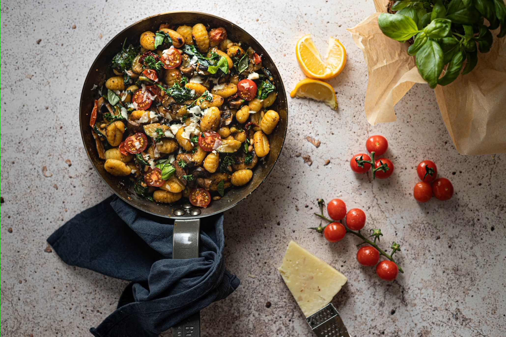

Cocina italiana

La cocina italiana es parte integral de las gastronomías mediterráneas, cuya dieta fue declarada Patrimonio Cultural Inmaterial de la Humanidad en 2010 por la Unesco, y es imitada y practicada en todo el mundo. Algunas preparaciones más reconocidas son la pizza, el risotto, muchas formas de pasta, la parmigiana, la frittata, el gelato o el tiramisú. Italia también posee una larga tradición de vinos, café, chocolate, licores, quesos o aceite entre otros productos.
Se trata de una cocina con fuerte carácter histórico y tradicional, variada gracias a cada una de sus regiones y heredera de largas tradiciones, que ha sabido perpetuar recetas antiguas como la polenta (alimento de la legión romana) o la pizza, plato de Nápoles por excelencia, entre muchos otros platos italianos que hoy en día se pueden degustar en cualquier lugar del mundo, así como en una típica trattoria italiana.
Italia es también el mayor productor de vinos a nivel mundial y el país que posee la más grande variedad de quesos en el mundo.